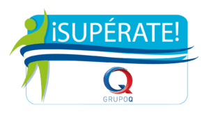

Formación Académica

Súperate Grupo Q
Centro ¡Supérate! Grupo Q, formación en inglés, informática (HTML, CSS, JavaScript, Microsoft Office) y valores como liderazgo y responsabilidad, orientada al desarrollo académico y personal.

Complejo Educativo Ofelia Herrera
Complejo Educativo Ofelia Herrera, institución donde cursé y destaqué en el Bachillerato General, fortaleciendo mis habilidades académicas y personales.